1. 핵심 요약
| 업소 | 서해박속낙지전문점 |
|---|---|
| 배송 완료 | 2026년 9월 11일(금) |
| 제품 | 린나이 RIR-4000S 업소용 1구 가스레인지 |
| 가스 / 수량 | LNG(도시가스) / 5대 |
| 구매 | 109,900원 × 5 = 549,500원 |
| 가스 연결 계획 | 2026-09-18(금) 10:00 · 총 11대 · 110,000원 |
2. 배송 및 제품 확인
- RIR-4000S 5대 배송 완료.
- 박스, 제품 본체, 버너, 삼발이, 스테인리스 상판 및 조절부 확인.
- 제품 라벨에서 RIR-4000S / LNG / 가스레인지(1구) 확인.
- 배송·개봉·제품 상태를 사진 및 동영상으로 기록.
3. 실제 사용설명서 기준 제품 규격
| 모델 / 종류 | RIR-4000S / 업소용 가스레인지 1구 |
|---|---|
| 크기 | 356 × 517 × 230 mm |
| 중량 | 4.5 kg |
| 가스 접속 | Ø 9.5 mm 가스용 호스 |
| 도시가스 소비량 | 4.65 kW (4,000 kcal/h) |
| LPG 소비량 | 4.65 kW (0.33 kg/h) |
| 안전장치 | 소화 안전장치 |
| 표준 / 인증 | KS B 8114 / 제18-0262호 |
| 제조·판매원 | 린나이코리아 주식회사 |
| 서비스 | 1544-3651 |
기존 비교자료의 46,500 kcal/h가 아니라, 이번 배송품의 실제 사용설명서에 기재된 4.65 kW (4,000 kcal/h)를 기준으로 정리했습니다.
4. 배송 5대 개별 식별번호
| # | 모델 | 가스 | 식별번호 |
|---|---|---|---|
| 1 | RIR-4000S | LNG | 1482822508D0117 |
| 2 | RIR-4000S | LNG | 1482822508D0063 |
| 3 | RIR-4000S | LNG | 1482822508D0062 |
| 4 | RIR-4000S | LNG | 1482822511D0013 |
| 5 | RIR-4000S | LNG | 1482822511D0007 |
5. 설치·운영 체크
- ✅ 5대 배송 완료
- ✅ LNG 확인
- ✅ 구성품·외관 확인
- ✅ 사용설명서 확보
- ✅ 5대 개별 라벨 기록
- ⬜ 가스 연결 후 점화·화력·누설 확인
- ⬜ 실제 테이블 장착 상태 확인
6. 공개·비공개 배포 구조
공개
- GitHub:
softm/baksok-public(Public) - GitHub Pages: https://softm.github.io/baksok-public/
- 공개본에는 개별 제품 식별번호 및 비공개 운영·인증 정보 제외
비공개
- GitHub:
softm/baksok-private(Private) - Vercel: https://baksok-private.vercel.app/
- 프로젝트 로그인 인증 적용
- 인증 후 Vercel 서버가 GitHub API로
main최신 원본을 요청 시 실시간 조회
중앙 인덱스
- 전체 Projects: https://softm.github.io/projects/
- 서해박속낙지 프로젝트: https://softm.github.io/projects/baksok/
7. 모든 이미지
현재 대화에서 확보된 사용자 이미지 18개를 원본 파일명으로 모두 포함했습니다.
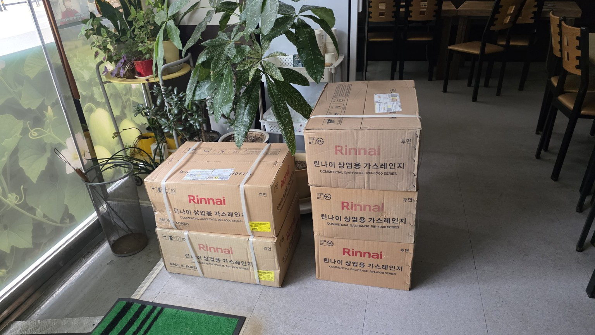
20260910_171012.jpg1536×865px
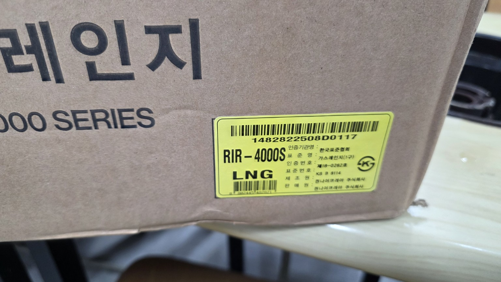
20260910_171117.jpg1536×865px
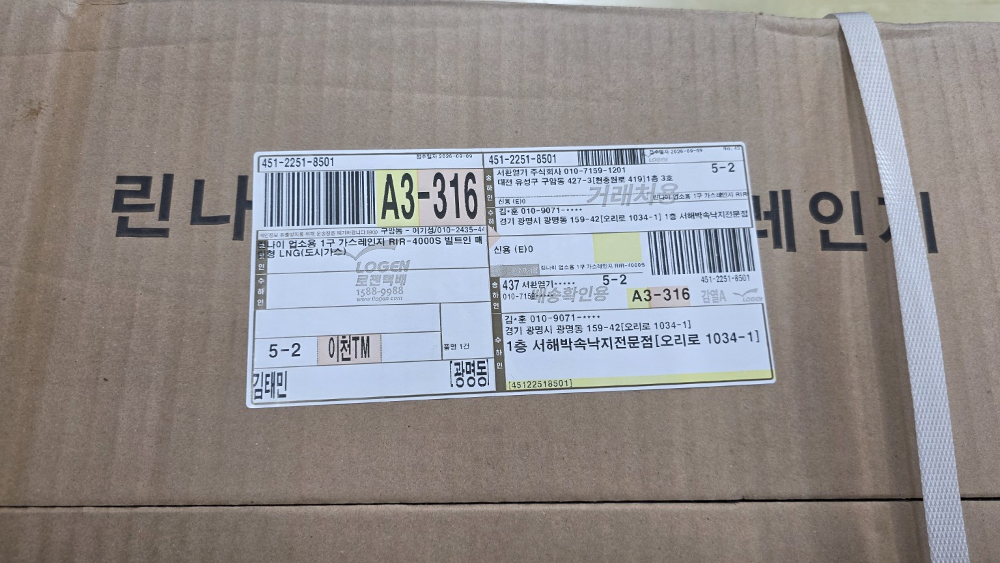
20260910_171150.jpg1536×865px
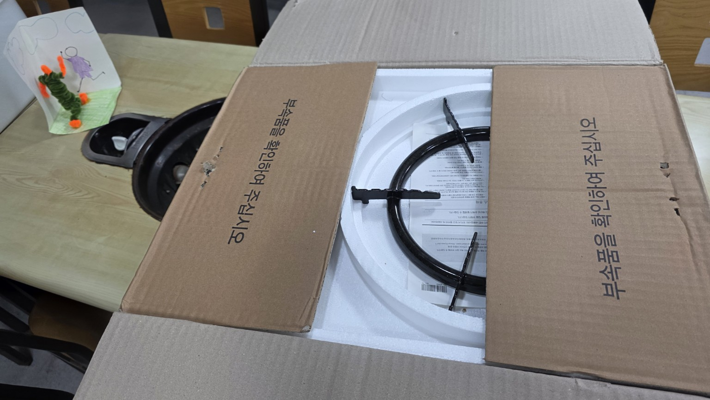
20260910_171311.jpg1536×865px
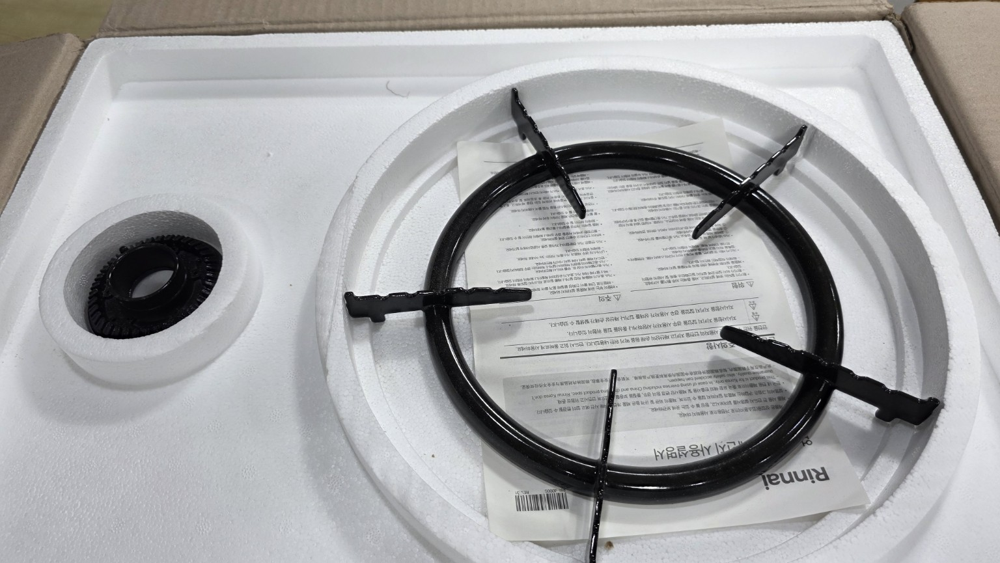
20260910_171317.jpg1536×865px
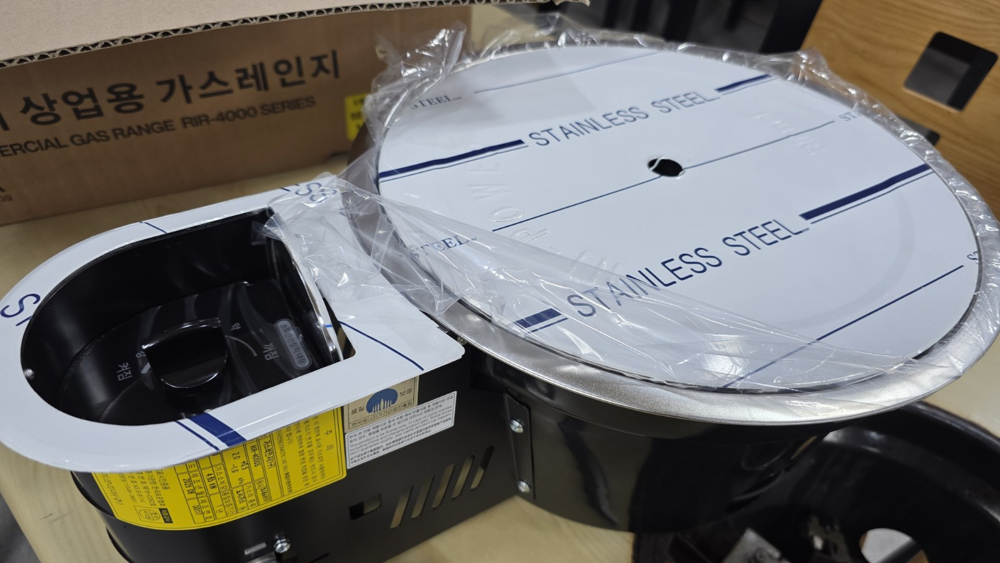
20260910_171631.jpg1536×865px
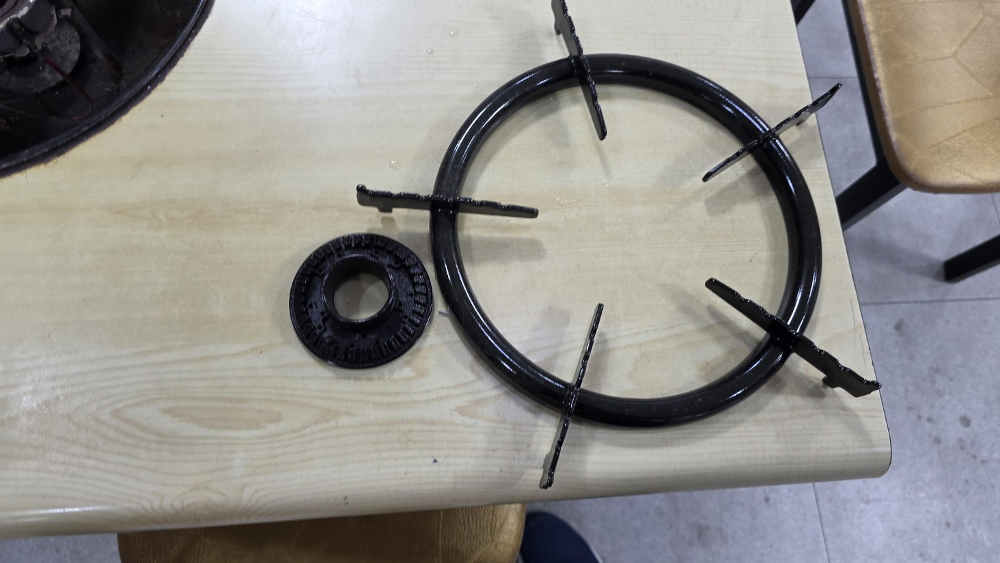
20260910_171634.jpg1536×865px
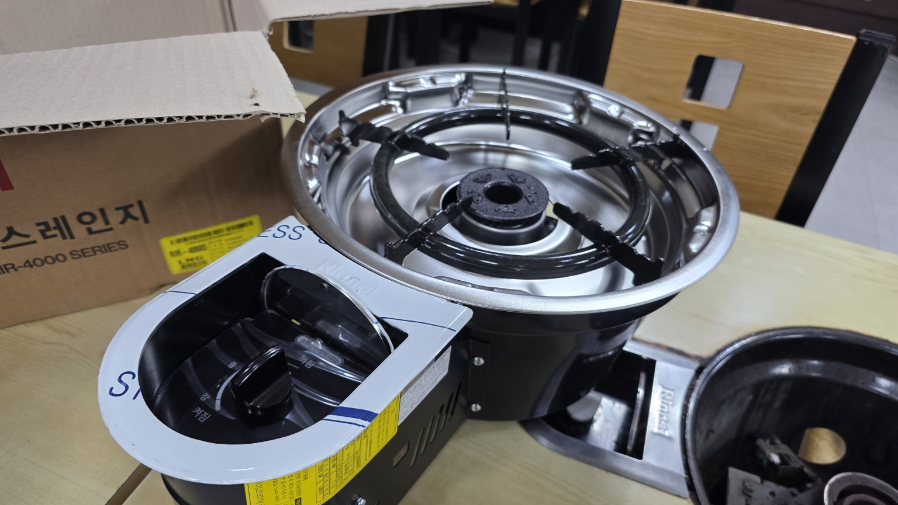
20260910_171741.jpg1536×865px
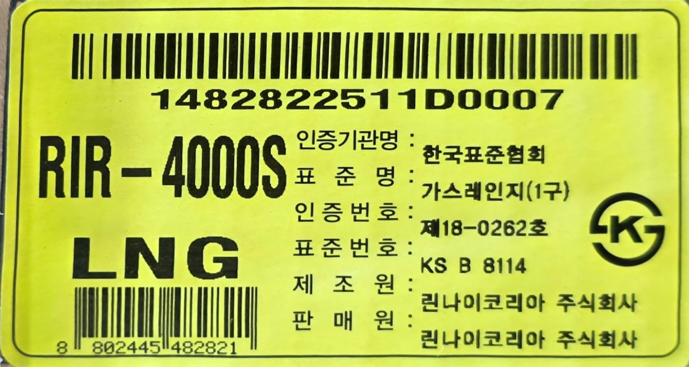
Scan_20260910_171808.jpg1536×819px

KakaoTalk_Photo_2026-09-14-10-55-18 007.jpeg2048×977px

KakaoTalk_Photo_2026-09-14-10-55-18 006.jpeg2048×997px

KakaoTalk_Photo_2026-09-14-10-55-18 005.jpeg1540×800px

KakaoTalk_Photo_2026-09-14-10-55-18 004.jpeg1693×920px

KakaoTalk_Photo_2026-09-14-10-55-17 003.jpeg2032×1130px

KakaoTalk_Photo_2026-09-14-10-55-17 002.jpeg1649×810px

KakaoTalk_Photo_2026-09-14-10-55-17 001.jpeg1498×799px
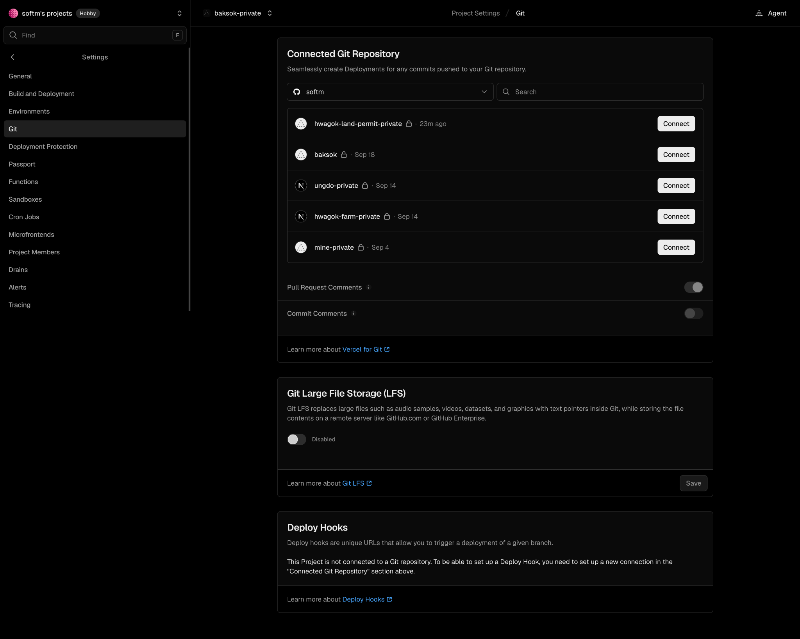
340466ea-b955-46d2-b10e-516d9ca5c4df.png2048×1638px
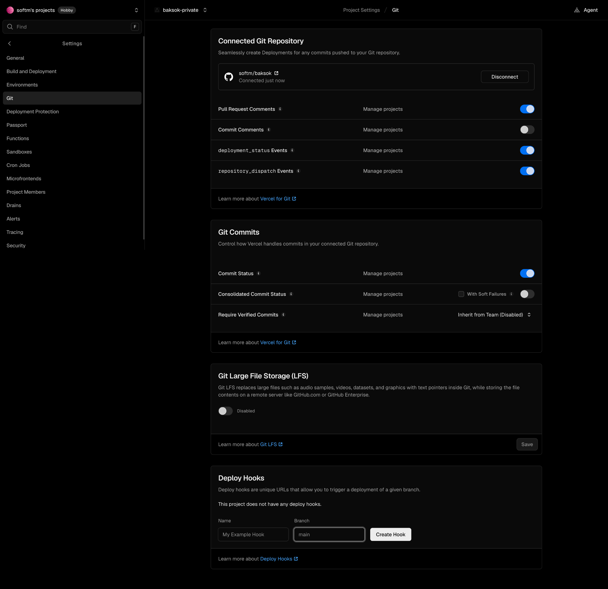
7cce484d-39eb-4bac-b6cb-3dbc7f20b84a.png2048×1983px
동영상
20260910_171743.mp4
8. 배포 운영 규칙 요약
- 공개 콘텐츠는
*-publicPublic 저장소를 원본으로 사용. - 비공개 콘텐츠는
*-privatePrivate 저장소를 원본으로 사용. - 비공개 사이트는 인증 없이 원문을 노출하지 않음.
- 비공개 콘텐츠는 인증 후 서버가 GitHub API로 최신 원본을 실시간 조회.
- GitHub token은 서버 환경변수에서만 사용하며 브라우저에 노출하지 않음.
- 새 기록 배포 시 상세페이지 → 프로젝트 홈 → 최상위 Projects를 함께 점검.
- 완료 보고에는 Repo/경로/공개범위/운영URL/실제검증 상태를 함께 표시.
9. 첨부 수량
이미지 18개 · 동영상 1개 · 전체 미디어 19개